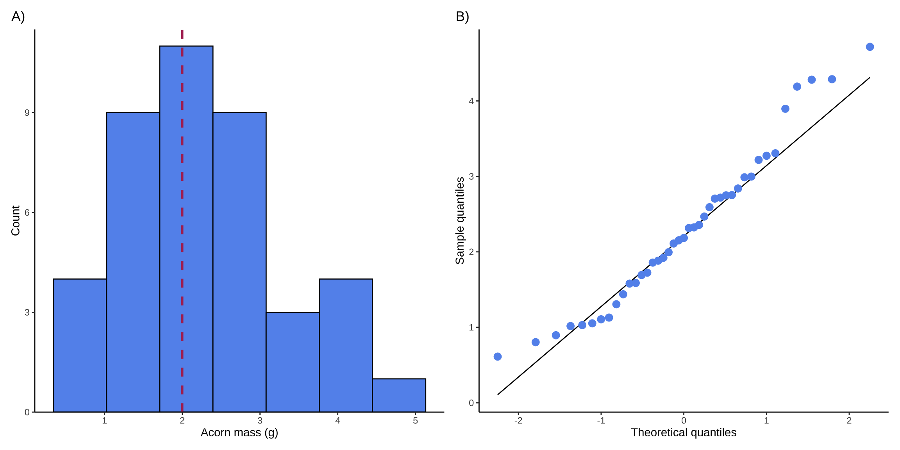
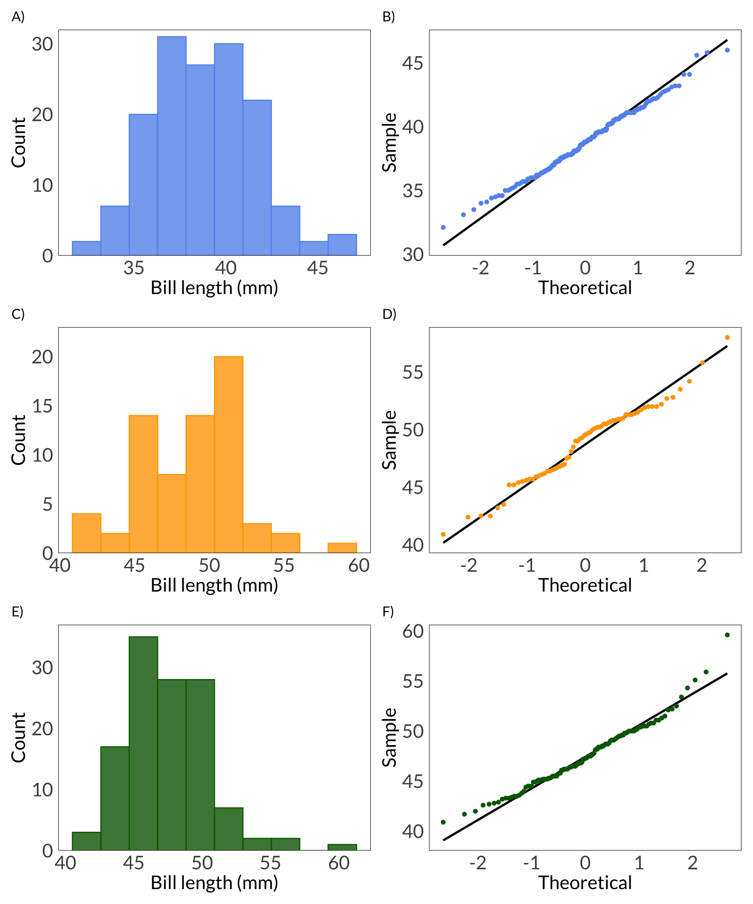
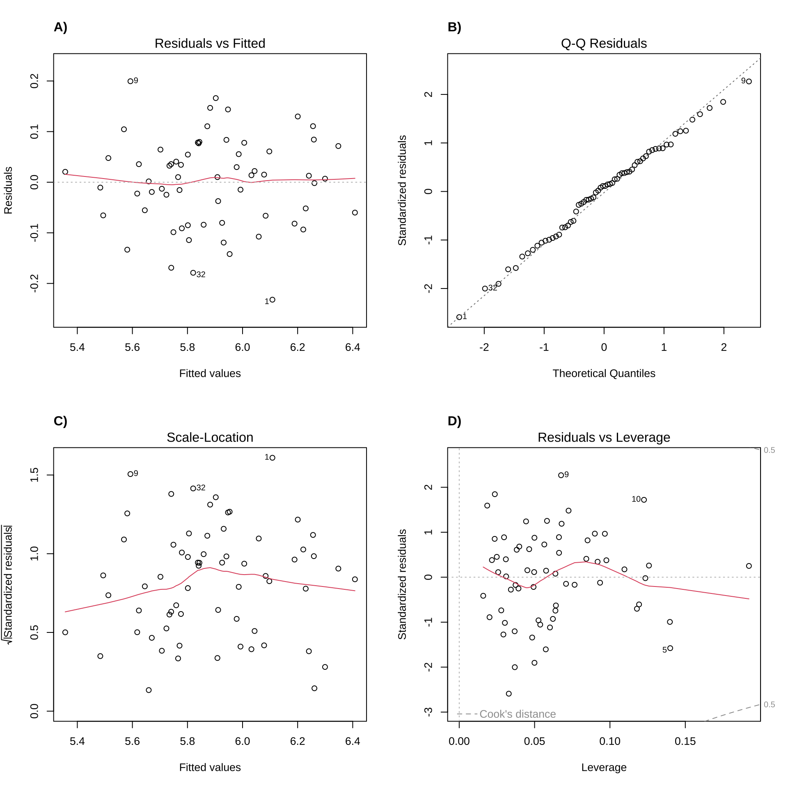

Obviously, this is a stats class - however, stats exists within the data science world, and data science includes communication about stats. It’s important for us, in this class, to understand the mechanics of the tests we use (assumptions, underlying math, etc.) but the real challenge is being able to communicate about those tests and ground what those tests reveal in the biology of the system we’re studying - that’s environmental science.
Communication about what statistical methods you use to address a question/answer a hypothesis should include writing along with some visualization (figures and/or tables). The following are examples from lecture. You’ve also done a lot of reading in this class, and have seen a lot of examples of how to communicate about statistics from other researchers.
Each code chunk with what is potentially new information is annotated - however, I haven’t annotated things like tests, creating plots, etc. because we’ve gone over that in class.
Code
# general uselibrary(tidyverse)# datalibrary(palmerpenguins)# visualizationlibrary(patchwork)library(flextable)# model summary table toolslibrary(broom)library(car)library(ggeffects)library(equatiomatic)# using the Lato font from Google fontslibrary(showtext)font_add_google("Lato", "Lato")showtext_auto()
Comparing groups
One sample t-test
This example from lecture was about comparing a sample of acorn masses to a theoretical mean (2 g).
Just generating some fake data for this example:
Code
set.seed(7)acorns <-rnorm(n =41, mean =2, sd =1)
Checking assumptions
For a t-test, one of the assumptions you can check is that your variable is normally distributed. Doing this with a histogram and a QQ plot makes sense:
Code
```{r hist-and-qq}#| fig.width: 12#| fig.height: 6#| out.width: 90%#| fig.align: centerhist <-enframe(acorns) %>%ggplot(aes(x = value)) +geom_histogram(bins =7, fill ="cornflowerblue", color ="#000000") +scale_y_continuous(expand =c(0, 0), limits =c(0, 11.5), breaks =c(0, 3, 6, 9, 12)) +geom_vline(xintercept =2, color ="maroon", lty =2, linewidth =1) +theme_classic() +labs(x ="Acorn mass (g)", y ="Count", title ="A)") +theme(plot.title.position ="plot")qq <-enframe(acorns) %>%ggplot(aes(sample = value)) +stat_qq_line(aes(sample = value)) +stat_qq(aes(sample = value), color ="cornflowerblue", size =3) +theme_classic() +labs(x ="Theoretical quantiles", y ="Sample quantiles",title ="B)") +theme(plot.title.position ="plot")hist + qq```

Example caption:
Figure 1. Visual checks for normally distributed variable. A) Histogram of acorn masses (g). Bars in histogram represent counts of acorns in each bin. Dashed red line represents theoretical mean (\(\mu\) = 0). B) Quantile-quantile (QQ) plot. Points in QQ plot represent sample quantiles compared against theoretical quantiles from a normal distribution. Solid black line represents a 1:1 relationship between sample and theoretical quantiles.
Making sure your figures render properly
You put a lot of effort into making figures, so it’s worth making sure they appear the way you think they would in your final document! You can control these in your chunk options (i.e. within the curly brackets). There are many ways to do this, but I like adjusting the a) aspect ratio using fig.width and fig.height and b) proportion using out.width.
In Quarto, you can set those options within the chunk (see above) or in the curly brackets. In RMarkdown, you can only use the curly brackets, which would look like:
You can write a caption in text (the easiest way) or you can try using code chunk options if you’re using Quarto. There are tips for how to do that here, though the formatting might not be the standard (i.e. bold text for figure number and title). I also changed the caption color - not required, but nice to add another visual cue that the caption is attached to the figure.
Generally, the font size in captions tends to be smaller than the main text. You can insert these options in Quarto by wrapping your text in a “fenced div” (see the source code for how to do that). In RMarkdown, you can use an HTML wrapper (here’s an example).
Example text:
We visually assessed normality using a histogram and a QQ plot (Figure 1), and determined that acorn mass in our sample was normally distributed.
Test
Code
acorn_test <-t.test(acorns, mu =2)
Example text:
We assessed whether acorn masses in our sample differed from the claim of 2g using a one-sample two-tailed t-test. Our null hypothesis was that the mean acorn mass in our sample was the same as the claim.
Test results
Code
acorn_test
One Sample t-test
data: acorns
t = 1.8035, df = 40, p-value = 0.07885
alternative hypothesis: true mean is not equal to 2
95 percent confidence interval:
1.964535 2.623323
sample estimates:
mean of x
2.293929
Example text:
We collected 41 acorns and found no significant difference between our sample mean mass and the claim (One-sample two-tailed t-test, t(40) = 1.8, \(\alpha\) = 0.05, p = 0.079). Our data suggest that acorn masses in our sampling area are on average the same mass as the claimed mass (Figure 1A).
Chi-square
This example from lecture was about surveying people to understand their priorities for restoration.
Again, generating fake data:
Code
# making a matrix (not a data frame) called `survey` ----survey <-tribble(~distance, ~trails, ~dog_access, ~wildlife_habitat,"walking_distance", 55, 38, 33,"driving_distance", 41, 25, 29,"out_of_town", 22, 27, 45) %>%# turning the column `distance` into the matrix rownames ----column_to_rownames("distance")
Test
Code
survey_test <-chisq.test(survey)
Example text:
To determine whether there was a relationship between living distance from wetland and restoration priority, we used a chi-square test using survey data from visitors (Table 1). Our null hypothesis was that there was no relationship between living distance from the wetland and restoration priority.
Table
Example caption:
Note: Table captions usually go above the table.
Table 1. Wetland restoration priority by living distance. Numbers in parentheses indicate proportion of responses (i.e. the 55 respondents living within walking distance of the wetland who prioritize trail development represent 44% of the total number of respondents living within walking distance (n = 126)).
Code
# calculate proportionssurvey_summary <- survey %>%# turning `survey` into a data frame ----as_tibble(rownames ="distance") %>%# making it long formatpivot_longer(cols = trails:wildlife_habitat, names_to ="responses", values_to ="counts") %>%# calculating proportions ----# grouping by living distancegroup_by(distance) %>%# counting the total number of respondents per living distancemutate(sum =sum(counts)) %>%# ungrouping to make sure that distance groups don't mess up downstream functionsungroup() %>%# calculating proportion of responses per living distancemutate(prop = counts/sum) %>%# making the table look nicer ----# making a new column where counts and proportions are displayed togethermutate(text =paste0(counts, " (", round(prop, digits =2), ")")) %>%# selecting columns of interestselect(distance, responses, text) %>%# making the data frame wider so that the columns are responses and rows are distancepivot_wider(names_from ="responses", values_from ="text") %>%# making the row labels nicermutate(distance =case_match( distance,"walking_distance"~"Walking distance","driving_distance"~"Driving distance","out_of_town"~"Out of town" )) %>%# turning everything into a table ----flextable() %>%# changing the column names to look nicerset_header_labels(distance ="Living distance",trails ="Trails",dog_access ="Dog access",wildlife_habitat ="Wildlife habitat") %>%# making the table fit the viewer windowautofit()survey_summary
Living distance
Trails
Dog access
Wildlife habitat
Walking distance
55 (0.44)
38 (0.3)
33 (0.26)
Driving distance
41 (0.43)
25 (0.26)
29 (0.31)
Out of town
22 (0.23)
27 (0.29)
45 (0.48)
Warning
Remember not to name code chunks with tables in them! Rendering gets stuck on the chunk if you do.
Based on responses from individuals living within walking distance (n = 126), within driving distance (n = 95), and out of town (n = 94), restoration priorities differ significantly by living distance category (Table 1, \(\chi^2\)(4) = 15.3, p = 0.004, \(\alpha\) = 0.05).
While the majority of residents within walking distance and driving distance prioritize trail use (44% and 43% respectively), residents outside the city prioritize wildlife habitat (48%).
These results indicate that wetland users living outside the city may have different intentions for visiting the wetland than local residents, but that restorationists can consider both trails and wildlife habitat in designing a restoration plan to suit user needs.
Analysis of variance
This example from lecture used the penguins data set from {palmerpenguins}.
Checking assumptions
For ANOVA, you should be checking that your variable is normally distributed and that your groups have equal variances. You can check the first assumption visually using histograms and QQ plots:
Code
```{r penguin-hist-and-qq}#| fig.height: 12#| fig.width: 10#| out.width: 60%#| fig.align: center# setting some color optionscol1 <-"cornflowerblue"col2 <-"orange"col3 <-"darkgreen"# making separate data frames for each speciesadelie <- penguins %>%filter(species =="Adelie")chinstrap <- penguins %>%filter(species =="Chinstrap")gentoo <- penguins %>%filter(species =="Gentoo")# making histograms for each speciesadelie_hist <-ggplot(data = adelie, aes(x = bill_length_mm)) +geom_histogram(bins =10, fill = col1, color = col1, alpha =0.8) +scale_y_continuous(expand =c(0, 0), limits =c(0, 32)) +labs(x ="Bill length (mm)", y ="Count",title ="A)") +theme_bw() +theme(panel.grid =element_blank(),axis.text =element_text(size =18),axis.title =element_text(size =18),axis.ticks =element_blank(),text =element_text(family ="Lato"),plot.title.position ="plot") chinstrap_hist <-ggplot(data = chinstrap, aes(x = bill_length_mm)) +geom_histogram(bins =10, fill = col2, color = col2, alpha =0.8) +scale_y_continuous(expand =c(0, 0), limits =c(0, 23)) +labs(x ="Bill length (mm)", y ="Count",title ="C)") +theme_bw() +theme(panel.grid =element_blank(),axis.text =element_text(size =18),axis.title =element_text(size =18),axis.ticks =element_blank(),text =element_text(family ="Lato"),plot.title.position ="plot") gentoo_hist <-ggplot(data = gentoo, aes(x = bill_length_mm)) +geom_histogram(bins =10, fill = col3, color = col3, alpha =0.8) +scale_y_continuous(expand =c(0, 0), limits =c(0, 37)) +labs(x ="Bill length (mm)", y ="Count",title ="E)") +theme_bw() +theme(panel.grid =element_blank(),axis.text =element_text(size =18),axis.title =element_text(size =18),axis.ticks =element_blank(),text =element_text(family ="Lato"),plot.title.position ="plot") # making QQ plots for each speciesadelie_qq <-ggplot(data = adelie, aes(sample = bill_length_mm)) +stat_qq_line(linewidth =1) +stat_qq(col = col1) +labs(x ="Theoretical", y ="Sample",title ="B)") +theme_bw() +theme(panel.grid =element_blank(),axis.text =element_text(size =18),axis.title =element_text(size =18),axis.ticks =element_blank(),text =element_text(family ="Lato"),plot.title.position ="plot") chinstrap_qq <-ggplot(data = chinstrap, aes(sample = bill_length_mm)) +stat_qq_line(linewidth =1) +stat_qq(col = col2) +labs(x ="Theoretical", y ="Sample",title ="D)") +theme_bw() +theme(panel.grid =element_blank(),axis.text =element_text(size =18),axis.title =element_text(size =18),axis.ticks =element_blank(),text =element_text(family ="Lato"),plot.title.position ="plot") gentoo_qq <-ggplot(data = gentoo, aes(sample = bill_length_mm)) +stat_qq_line(linewidth =1) +stat_qq(col = col3) +labs(x ="Theoretical", y ="Sample",title ="F)") +theme_bw() +theme(panel.grid =element_blank(),axis.text =element_text(size =18),axis.title =element_text(size =18),axis.ticks =element_blank(),text =element_text(family ="Lato"),plot.title.position ="plot") # putting all the plots together using `patchwork`(adelie_hist + adelie_qq) / (chinstrap_hist + chinstrap_qq) / (gentoo_hist + gentoo_qq)```

Example caption:
Figure 2. Visual checks for normally distributed variable. Visual checks for normally distributed variable. A, C, E) Histograms of penguin bill length (mm) for Adelie (A), Chinstrap (C), and Gentoo (E) penguins. Bars represent counts of bill lengths in each bin. B, D, F) QQ plots of penguin bill length. Points in QQ plot represent sample quantiles compared against theoretical quantiles from a normal distribution. Solid black lines represent a 1:1 relationship between sample and theoretical quantiles.
Now a series of Shapiro-Wilk tests to statistically test for normal distribution:
Code
shapiro.test(adelie$bill_length_mm)
Shapiro-Wilk normality test
data: adelie$bill_length_mm
W = 0.99336, p-value = 0.7166
Code
shapiro.test(chinstrap$bill_length_mm)
Shapiro-Wilk normality test
data: chinstrap$bill_length_mm
W = 0.97525, p-value = 0.1941
Code
shapiro.test(gentoo$bill_length_mm)
Shapiro-Wilk normality test
data: gentoo$bill_length_mm
W = 0.97272, p-value = 0.01349
Making decisions about normality
In lecture, we talked about making a decision: do you think this deviation from normality is a big enough deal or not? ANOVA is fairly robust against violations of the normality assumption, and we have a lot of observations. We might decide to continue with the ANOVA (especially since the variances between groups are equal - see below). However, you could also try a transformation (e.g. a log transformation) on bill length, and see if that fixes your problem.
Checking for equal variances:
Code
leveneTest(bill_length_mm ~ species, data = penguins)
Levene's Test for Homogeneity of Variance (center = median)
Df F value Pr(>F)
group 2 2.2425 0.1078
339
Example text:
Prior to our analysis, we checked assumptions for analysis of variance. We tested for equality of variances between groups using Levene’s test and found no statistically significant differences in variances between groups (F(2, 339) = 2.24, p = 0.11, \(\alpha\) = 0.05). We visually assessed normality using histograms and QQ plots (Figure 2) and statistically tested for normality of penguin bill length using Shapiro-Wilk tests for each species. Adelie and Chinstrap bill length did not indicate any deviations from normality (Adelie: W W = 0.99, p = 0.72; Chinstrap: W = 0.98, p = 0.19), but Gentoo bill length did (W = 0.97, p = 0.01). Taking this together, we decided to continue using analysis of variance given our sample size (n = 342) and that analysis of variance tends to be robust to slight violations of the normality assumption.
Note that you only really need to state your \(\alpha\) once in a report. The assumption is that you’re not changing your significance level for each test.
Test
ANOVA:
Code
penguins_anova <-aov(bill_length_mm ~ species, data = penguins)
Tukey HSD:
Code
penguins_HSD <-TukeyHSD(penguins_anova)
Example text:
We tested for differences between penguin species in bill length using analysis of variance. Our null hypothesis was that species did not differ in mean bill length. We used Tukey’s Honestly Significant Difference (Tukey HSD) as a post-hoc test to determine pair-wise differences between groups.
Test results
Code
penguins_anova
Call:
aov(formula = bill_length_mm ~ species, data = penguins)
Terms:
species Residuals
Sum of Squares 7194.317 2969.888
Deg. of Freedom 2 339
Residual standard error: 2.959853
Estimated effects may be unbalanced
2 observations deleted due to missingness
# getting table from ANOVA object ----tidy(penguins_anova) %>%# changing very small p-values to < 0.001mutate(p.value =case_when( p.value <0.001~"< 0.001" )) %>%# rounding values in numerical columns to 1 decimal pointmutate(across(sumsq:statistic, ~round(.x, digits =1))) %>%# changing the row names to be nicer (capitalizing Species)mutate(term =case_match( term, "species"~"Species",.default = term )) %>%# turning the data frame into a flextable ----flextable() %>%# changing the column names to be nicerset_header_labels(term ="Source of variation",df ="Degrees of freedom",sumsq ="Sum of squares",meansq ="Mean squares",statistic ="F-statistic",p.value ="p-value") %>%# making small p-values boldbold(~ p.value =="< 0.001", 6) %>%# fitting the table to the viewerautofit()
Source of variation
Degrees of freedom
Sum of squares
Mean squares
F-statistic
p-value
Species
2
7,194.3
3,597.2
410.6
< 0.001
Residuals
339
2,969.9
8.8
Tukey HSD results:
Code
penguins_HSD
Tukey multiple comparisons of means
95% family-wise confidence level
Fit: aov(formula = bill_length_mm ~ species, data = penguins)
$species
diff lwr upr p adj
Chinstrap-Adelie 10.042433 9.024859 11.0600064 0.0000000
Gentoo-Adelie 8.713487 7.867194 9.5597807 0.0000000
Gentoo-Chinstrap -1.328945 -2.381868 -0.2760231 0.0088993
Example text (if you decided not to make a table:
We found a significant difference in bill length across species (analysis of variance, F(2, 339) = 410.6, p < 0.001). Adelie penguins tend to have the shortest bills: on average, Gentoo penguins have 8.7 mm (Tukey HSD 95% confidence interval: [7.9, 9.6] mm) longer bills than Adelie penguins, and Chinstrap penguins have 10.0 mm ([9.0, 11.1] mm) longer bills than Adelie penguins.
If you decide not to go with a table, the F-statistic, degrees of freedom, and p-value should be in parentheses. This is the only difference between this example and the one below.
Example text (with a table):
We found a significant difference in bill length across species (Table 2). Adelie penguins tend to have the shortest bills: on average, Gentoo penguins have 8.7 mm (Tukey HSD 95% confidence interval: [7.9, 9.6] mm) longer bills than Adelie penguins, and Chinstrap penguins have 10.0 mm ([9.0, 11.1] mm) longer bills than Adelie penguins.
Relationships between variables
Linear models
This first example was from lecture. We only talked about the equation and significant predictors, but I’ll break it down further here.
Generating data:
Code
set.seed(666)# sample sizen <-64plant_df <-tibble(# predictor variablestemperature =round(rnorm(n = n, mean =28, sd =1), digits =1),light =round(rnorm(n = n, mean =1, sd =0.2), digits =1),ph =rnorm(n = n, mean =7, sd =0.01),# response: growth in cm/weekgrowth = light*rnorm(n = n, mean =0.3, sd =0.1) + temperature/round(rnorm(n = n, mean =5, sd =0.1)))
Building a model
Code
plant_model <-lm(growth ~ light + temperature + ph, data = plant_df)
Diagnostics:
I changed the chunk options for this to make sure it displayed correctly - see the code chunk! I also chose which plots to plot using the which() function, and added a title to each using title(). The syntax is a little different from a standard ggplot() figure because these are all done in base R, but labelling plots is an option.
Code
```{r plant-diagnostics}#| fig-width: 10#| fig-height: 10#| out.width: 90%#| fig.align: centerpar(mfrow =c(2, 2))plot(plant_model, which =c(1))title("A)", adj =0)plot(plant_model, which =c(2))title("B)", adj =0)plot(plant_model, which =c(3))title("C)", adj =0)plot(plant_model, which =c(5))title("D)", adj =0)```

Example caption:
Figure 3. Model diagnostic plots. In all plots, points represent residuals. Red lines (residuals vs fitted, scale-location, and residuals vs leverage) are lines depicting patterns in residuals. Grey dashed lines represent reference lines.
Example text:
We tested the predictive relationship between plant growth and light, temperature, and soil pH using a linear model. Our null hypothesis was that none of these variables would predict plant growth. We used diagnostic plots to visually assess residual normality (Figure 3B) and homoskedasticity (Figures 3A and 3C). Additionally, we determined there were no outliers influencing our model predictions using Cook’s distance (Figure 3D).
Model predictions
Just to see what the original summary object is:
Code
summary(plant_model)
Call:
lm(formula = growth ~ light + temperature + ph, data = plant_df)
Residuals:
Min 1Q Median 3Q Max
-0.23209 -0.06571 0.01010 0.06173 0.19950
Coefficients:
Estimate Std. Error t value Pr(>|t|)
(Intercept) -6.67140 6.80194 -0.981 0.331
light 0.35196 0.05939 5.926 1.63e-07 ***
temperature 0.19626 0.01058 18.558 < 2e-16 ***
ph 0.96241 0.96806 0.994 0.324
---
Signif. codes: 0 '***' 0.001 '**' 0.01 '*' 0.05 '.' 0.1 ' ' 1
Residual standard error: 0.0911 on 60 degrees of freedom
Multiple R-squared: 0.8759, Adjusted R-squared: 0.8696
F-statistic: 141.1 on 3 and 60 DF, p-value: < 2.2e-16
Table option 1:
Table 3. Model prediction table. Bolded p-value indicates significant difference from 0.
Code
plant_model %>%# turning the model object into a flextable ----as_flextable() %>%# changing the row labels using `compose()` ----# i selects the row, j selects the columncompose(i =2, j =1, # value is whatever you want to change the text tovalue =as_paragraph(# `as_sup()` makes something a superscript - good for units etc."Light (watts/m", as_sup("2"), ")" )) %>%compose(i =3, j =1, value =as_paragraph("Temperature (°C)" )) %>%compose(i =4, j =1, value =as_paragraph("pH" )) %>%# formatting the numbers to display to 3 decimal points ----set_formatter(estimate =function(x) sprintf("%.03f", x),std.error =function(x) sprintf("%.03f", x),statistic =function(x) sprintf("%.03f", x),p.value =function(x) sprintf("%.03f", x)) %>%# changing the p.value to display as < 0.001 when very small ----compose(j ="p.value", i =~ p.value <0.001,value =as_paragraph("< 0.001" )) %>%# adding model equation at the top ----# inserting new header row (to make space for equation)add_header_lines("", top =TRUE) %>%# putting in equationcompose(# choosing row 1, column 1, indicating that is a headerj =1, i =1, part ="header",# putting in the equation using as_equation and extract_eq from {equatiomatic}value =as_paragraph(as_equation(extract_eq(plant_model), # formatting equationwidth =2, height = .5) )) %>%# making sure the equation is centered on the tablealign(i =1, part ="header", align ="center") %>%# formatting header labels ----set_header_labels(statistic ="t-statistic",p.value ="p-value") %>%# making cells bold when p.value < 0.05 ----bold(i =~ p.value < .05, j ="p.value") %>%# making table fit viewer ----autofit()
F-statistic: 141.1 on 60 and 3 DF, p-value: 0.0000
Including tables and full tables with {flextable}
When writing about models, you have to make decisions about whether or not you want to include a table of the model summary. In multiple linear regression (and for more complex models), it’s a good idea to include a table of the model summary.
If you wanted to make a table of the model estimates and the relevant information at the bottom of that summary (for example, \(R^2\), F-statistic, degrees of freedom, etc.), you could use flextable::as_flextable() which takes the model object - this is Table 3. This skips the step of creating an intermediate data frame and just turns everything into a flextable object. However, this can be a bit tricky: the formatting to make it look “good” takes some getting used to. You can go either way, but this is one option if you’d rather condense the information from the model prediction table and ANOVA table into one. It is also somewhat easier to interpret than the model prediction + ANOVA table combo (Tables 4 + 5).
Table option 2:
Table 4. Model prediction table. Bolded p-value indicates significance.
Figure 4. Predicted growth as a function of A) temperature and B) light. In both panels, points represent observations, colored lines represent model predictions, and shaded areas represent 95% confidence intervals. In A), growth is predicted as a function of temperature for a constant light level of 0.98 watts/m2 and pH 7. In B), growth is predicted as a function of light for a constant temperature of 27.9 °C and pH 7.
Understanding predictions
Remember that for multiple linear regression, the slopes represent change in the response variable for each 1 unit change in the predictor for all else held constant. When getting model estimates for slopes, the “constant” values are the mean of the variable. When using ggeffects::ggpredict(), these values are printed below the prediction table (you can double check this by calculating the mean yourself!).
Test results
Example text:
We found that light and temperature significantly predicted plant growth, but not pH (Table 3). The overall model accounted for 87% of the variance in plant growth. For each 1 °C increase in temperature at constant light and pH, we expect 0.20 \(\pm\) 0.01 increase in plant growth (Figure 4A). For each 1 watt/m2 increase in light at constant temperature and pH, we expect a 0.35 \(\pm\) 0.06 increase in plant growth (Figure 4B).
Choosing which parameters to highlight
With multiple linear regression and generalized linear models, you’re usually working with pretty complex model structure. It’d be impossible (and not that interesting, necessarily) to discuss all the predictors. You can choose which one(s) you want to highlight in your visualizations and text based on what you think is most interesting/biologically relevant.
Citation
BibTeX citation:
@online{bui,
author = {Bui, An},
title = {Clear Communication = Interpretable Stats},
url = {https://an-bui.github.io/ES-193DS-W23/resources/communicating-results.html},
langid = {en}
}